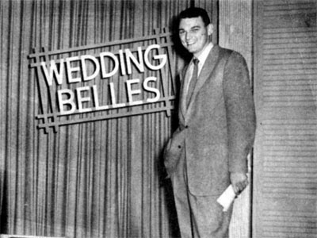
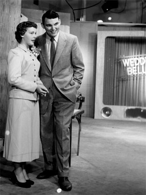
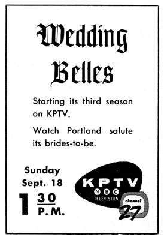

|
|
Wedding Belles  Brad Reynolds (August 9 - 23, 1953) and Gene Brendler (August 30 and later) hosted this show for brides-to-be, with helpful hints by a panel of wedding experts on such problems as going away clothes, decorations and receptions. A fashion show, of fashions for the bride and her mother, was another feature of this program, sponsored by Bruno Photography Studios.  
This page last updated on August 25, 2025 |


|
Yesterday's KPTV Website design and content ©2003-2025 by Ron Dunevant, LLC unless otherwise noted. |